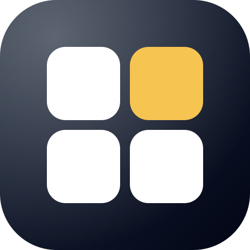
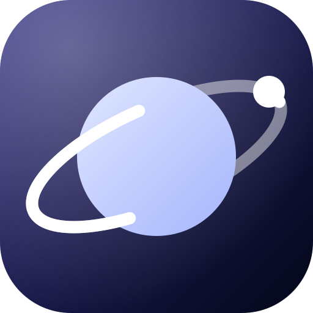
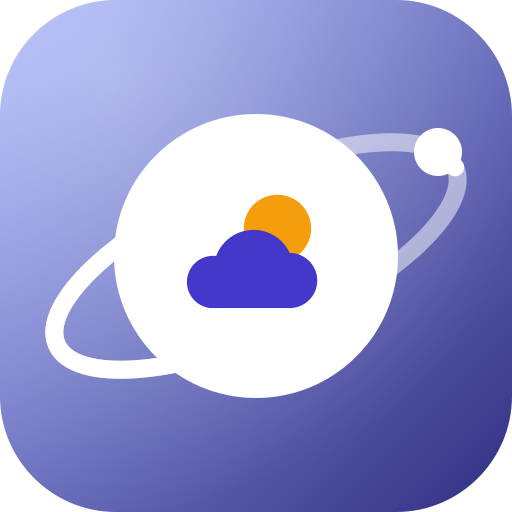
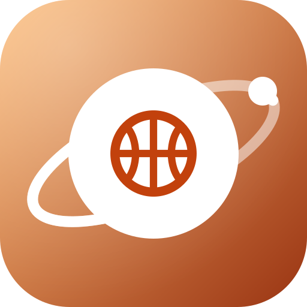

Quadra Pass
一組通行碼，所有 App 共用 · One pass for every app

Quadra投資與娛樂，一個帳戶
Orbit每天用得到的小工具Orbit Class即時課表：現在、下一節與倒數Your class schedule, live

Orbit Weather一個答案的天氣：降雨、紫外線、空氣，跟著你的行程One clear forecast for wherever you’ll beOrbit Transit全台公車、火車、捷運與 YouBike，一次規劃Buses, trains, metros and bikes across Taiwan
Orbit Sports所有運動的賽程、比分與數據Every sport, every match, every statOrbit Words背得住的英文單字：大考 6000 字，真人發音English words that stay with you